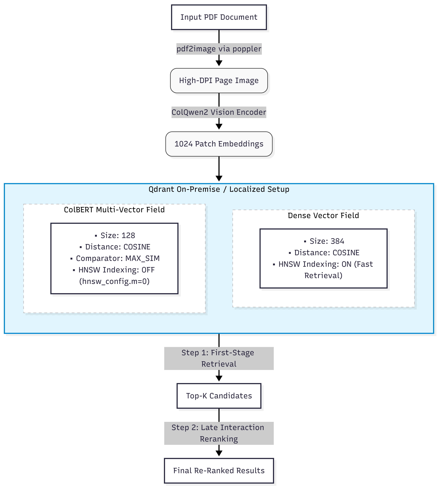
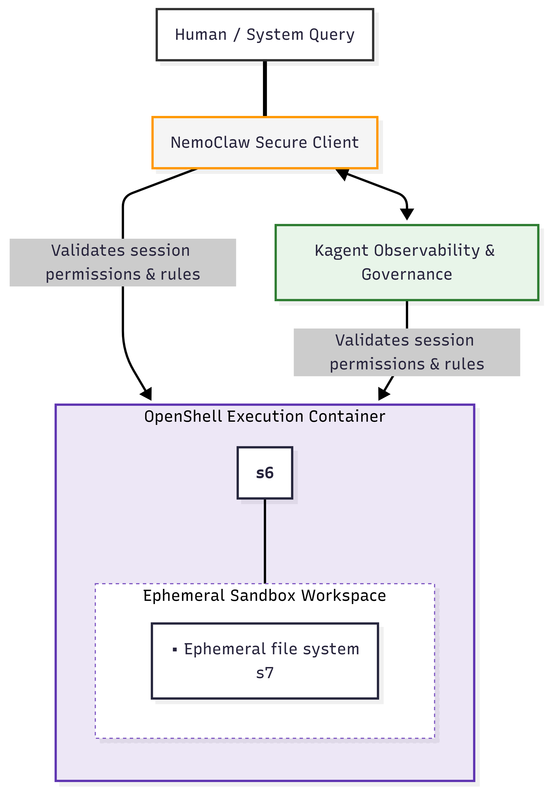

B2B Operational Realities: Cloud Token Economics and Data Sovereignty
The rapid evolution of generative AI has exposed critical vulnerabilities in pure cloud-hosted model dependency1. While early corporate deployments relied heavily on public cloud endpoints, the emergence of multi-agent workflows has created an operational challenge known as the Token Trap1. Unlike human users who interact with large language models (LLMs) periodically, autonomous agents execute continuous, repetitive, background API calls to complete complex workflows1. This ongoing background execution can drive exponential token costs under public cloud utility models, turning what seemed like a low-cost proof of concept into a significant operational liability1.
Consequently, switching to self-hosted, on-premise, or private cloud hardware delivers a highly predictable return on investment1. Local agent computers convert variable, ongoing operational expenditure (OPEX) rental fees into permanent, depreciable capital expenditure (CAPEX) assets1. Once the underlying physical hardware is provisioned, the marginal cost of generating additional tokens drops to zero3. This financial predictability is especially critical for international enterprises, as cloud API rates are typically billed in United States Dollars2. When local operational revenues are generated in depreciating or volatile currencies such as the Brazilian Real or the Mexican Peso, sudden exchange rate fluctuations can dramatically inflate the cost of cloud-hosted inference2. Shifting 60% to 80% of inference volume to local models insulates the enterprise from currency exchange risks and stabilizes operational budgets2.
Not only financial predictability, but also data sovereignty represents a regulatory constraint2. Strict frameworks such as the European Union AI Act, General Data Protection Regulation (GDPR), and Health Insurance Portability and Accountability Act (HIPAA) demand most of the time unreachable amount of control over sensitive raw text, patient records, and financial transactions3. Directing these datasets to external third-party servers presents a significant risk surface2. Self-hosted architectures ensure that sensitive tokens never leave the corporate intranet, allowing for fully air-gapped agent operations that process protected contracts or sensitive records without violating compliance protocols3. Additionally, self-hosted deployments insulate enterprises from external API deprecations, sudden price increases, and unpredictable internet latency, thereby guaranteeing strict control over the operational roadmap4.
These B2B operational realities have driven leading organizations to achieve measurable business value through private AI implementations8. Real-world case studies demonstrate that financial institutions like JPMorgan Chase have successfully reduced fraud, while retail giants like Walmart have optimized inventory pipelines8. In healthcare, UnitedHealth has automated complex claims processing, and logistics leaders like FedEx have enhanced delivery timelines8.
To replicate these successes, enterprises must carefully evaluate their deployment options across three distinct topologies1:
| Deployment Topology | Architectural Characteristics | Operational Advantages | Risk & Complexity Profile |
|---|---|---|---|
| Fully Hosted / Cloud-Dependent | Edge devices serve as simple input/output execution engines; all inference workloads run via external APIs1. | Access to cutting-edge frontier models; zero upfront hardware infrastructure setup1. | Low predictability of recurring costs; data egress risks; rate limits and throttling1. |
| Hybrid Orchestration | Workloads are divided between local on-device LLMs and cloud APIs1. | Routines and metadata extractions run locally; highly complex reasoning defaults to the cloud1. | Requires custom middleware routers to manage dynamic latency and confidence-based handoffs2. |
| Fully Local / On-Premise | Entire agent framework, inference engines, and data storage reside within the private intranet1. | Absolute data privacy; zero token-based operational costs; consistent, predictable performance1. | High upfront CAPEX; demands specialized in-house machine learning engineering expertise4. |
Cognitive Architectures and Multi-Agent Collaboration
Implementing an agentic workflow requires translating unstructured human requests into predictable, autonomous system actions10. The underlying agentic cognitive loop processes information in five distinct phases10:
- Input Ingestion & Natural Language Comprehension: The system ingests structured or unstructured data from diverse platforms such as CRMs, ERPs, or internal file stores10. The model parses intent, extracts parameters, and references episodic memory to personalize the interaction10.
- Choice Formulation & Routing: The agent executes a routing logic10. For basic tasks, standard deterministic routing suffices10. For ambiguous conditions, the model determines if it must access external resources (APIs, vector databases) or break down a complex workflow into smaller, sequential steps10.
- Task Fulfillment: The agent orchestrates its integrations with external systems, executing programmatic queries or transactional writes10.
- Response Cycle & Adaptation: The system checks the outcomes of its actions against execution standards10. Feedback loops modify the agent’s path, allowing the model to correct errors before final output delivery10.
- State Persistency & Memory Synchronization: The final state, output schemas, and conversation histories are persisted10.
To optimize execution within consumer-grade or mid-range local enterprise hardware, modern architectures utilize a two-tier work division4. Rather than relying on a single large model to handle all computational tasks, systems pair a larger Lead Agent model with multiple specialized Worker models4:
- The Lead Agent / Senior Architect: This model utilizes a larger parameter weight footprint or a Mixture-of-Experts (MoE) design with a large context window4. It processes high-level system logic, defines application architecture, manages task delegation, and routes sub-tasks to downstream pipelines4.
- The Worker Agent / Junior Developer: These are highly optimized, dense, or sparse low-parameter models4. They execute fast, precise, repetitive tasks such as standard unit code generation, metadata extraction, or text-to-JSON serialization4.
This two-tier split significantly reduces overall compute demands4. For example, a Lead Agent utilizing a 35-billion parameter MoE model (with only 3-billion active parameters per token) can handle high-level logic, while a dense 4-billion parameter model executes standard sub-tasks, ensuring high throughput across the entire workflow4. To ensure reliability, local runners use context-free grammars to force models to adhere strictly to JSON schemas, preventing the syntax hallucinations that would otherwise break downstream processing3.
Selecting self-hosted models requires matching the task complexity to the hardware footprint14. The following table evaluates the leading open-source models optimized for enterprise agentic workflows14:
| Model Family & Variant | Parameter Count (Total / Active) | Native Context Window | Target Hardware Requirements | Primary Enterprise Application |
|---|---|---|---|---|
| GLM-5.2 | 753B Total / 40B Active (MoE)15 | 1M Tokens15 | Multi-GPU Node (4x H100/H200 80GB)15 | Long-horizon repository-level coding; complex multi-document reasoning15. |
| Kimi K2.7 Code | 1T Total / 32B Active (MoE)15 | 256K Tokens15 | 8x H100/H200 80GB GPU Node15 | Agent-swarm coordination; complex tool calling across long sessions15. |
| MiniMax M3 | 428B Total (MoE)15 | 1M Tokens15 | 3-4x H100 80GB GPU Node15 | Low-prefill latency retrieval over massive files via Sparse Attention15. |
| Qwen 3.6 35B-A3B | 35B Total / 3B Active (MoE)14 | 262K Tokens14 | Single consumer GPU (RTX 4090/5090)14 | High-throughput, cost-efficient edge agent; local routing and planning4. |
| Gemma 4 26B-A4B | 26B Total / 3.8B Active (MoE)14 | 256K Tokens14 | Standard workstation or Intel Xeon CPU14 | High-speed local text extraction and categorization2. |
| IBM Granite Code (34B) | 34B Mamba-2 Hybrid15 | 128K Tokens | Standard workstation / Laptop14 | Memory-efficient coding assistant with 70% lower RAM footprint15. |
To coordinate these models, enterprise architects must select an orchestration framework that matches their workflow requirements13. The following table compares the leading frameworks across key deployment dimensions13:
| Orchestration Framework | Primary Programming Model | State Persistence Mechanism | Learning Curve | Ideal Enterprise Use Case |
|---|---|---|---|---|
| LangGraph | Directed graphs with conditional edges13. | Stateful, transactional database checkpoints13. | Medium to High13. | Regulated workflows requiring complex loops and human-in-the-loop approvals13. |
| CrewAI | Role-based autonomous agent crews18. | Task outputs passed sequentially; A2A protocols12. | Low13. | Rapid prototyping of sequential business operations13. |
| OpenAI Agents SDK | Explicit agent-to-agent handoffs13. | Ephemeral context variables13. | Low13. | Clean, opinionated handoffs within standardized OpenAI environments13. |
| Claude Agent SDK | Tool-use chain with sub-agents13. | Integration via Model Context Protocol (MCP)13. | Medium13. | Complex browser automation and safety-first extended thinking workflows13. |
| Google ADK | Hierarchical agent trees13. | Session state with pluggable backends13. | Medium13. | Cross-framework orchestration and multimodal applications13. |
Unified Data Access and the Model Context Protocol
Integrating local agents into enterprise environments requires addressing the \(N \times M\) integration problem20. When a company maintains \(N\) distinct agent applications and \(M\) internal data sources (such as databases, file shares, and SaaS APIs), building custom integrations for each connection results in a complex, fragile architecture20. If any model provider updates their API or a target system modifies its schema, multiple integrations can break simultaneously20.
The Model Context Protocol (MCP) solves this challenge by standardizing how applications connect to data sources20. Much like a physical USB-C port standardizes hardware connections, MCP acts as a universal adapter for AI systems20. Under this architecture, developers implement the protocol just once for each client and server, reducing the total number of integrations from \(N \times M\) to \(N + M\).
MCP utilizes a client-server architecture inspired by the Language Server Protocol (LSP)21. The host application runs lightweight MCP client sessions that communicate with standalone MCP servers over JSON-RPC 2.0 transport channels20. Standard input/output (stdio) is used for local resources to ensure fast, synchronous message transmission, while Server-Sent Events (SSE) over HTTP handle remote services20. The MCP protocol establishes a secure, two-way bridge using three primary primitives22:
- Tools: Standardized functions exposed to the LLM (such as executing SQL queries or editing files)20.
- Resources: Contextual data objects identified by unique URIs (such as real-time database schemas or file contents)22.
- Prompts: Pre-packaged templates that standardize how the model interacts with external tools22.
By decoupling data access from model logic, MCP allows enterprises to securely expose live resources without pre-indexing them into standard RAG search indexes11.
The following table details the standard enterprise MCP servers used to expose system resources to local agents23:
| MCP Server | Core Primitives & Tools Exposed | Primary Target Systems | Real-World Enterprise Application |
|---|---|---|---|
| Official GitHub Server | list_files, create_issue, open_pr, run_workflow, search_code23. | Git Repositories21. | Automating code reviews, repository management, and PR descriptions23. |
| Slack Server | send_message, list_channels, add_reaction, search_messages, upload_file23. | Slack Web API23. | Real-time workspace notifications and automated channel moderation11. |
| BigQuery Server | execute_sql, list_dataset_ids, get_table_info, dry_run_cost, stream_results23. | Google Cloud Data Warehouses23. | Dynamic database lookup and schema analysis without manual SQL coding23. |
| Windows CLI Server | execute_command, execute_powershell, list_running_processes, get_system_info23. | Host OS Automation23. | Automated system administration, monitoring, and network configuration23. |
| Figma Dev Mode Server | get_frame_geometry, list_components, get_design_tokens, export_svg23. | Figma Design Assets23. | Streamlining design-to-code pipelines and asset extraction23. |
| CData SharePoint Server | Standard SharePoint lists, libraries, and permission metadata access23. | SharePoint Document Management23. | Secure document search across corporate intranets while respecting existing ACLs23. |
Advanced Multimodal Retrieval-Augmented Generation
Traditional text-only RAG pipelines struggle when indexing complex business documents26. When parsing research papers, financial reports, or engineering manuals, text-only systems strip away formatting, layout structure, and spatial relationships26. If a system splits a table into plain text chunks or isolates an image from its caption, the model loses the semantic context needed to answer user queries accurately26.
To solve this, modern multimodal RAG architectures use three primary ingestion patterns28. The first, Caption-and-Index, extracts images, uses a VLM to generate textual descriptions, and embeds those descriptions as standard text26. This allows organizations to reuse their existing text-only pipelines, though it is highly lossy and prone to incorporating VLM hallucinations directly into the index28. The second, Unified Embeddings, maps both text and images into a single vector space (using models like Cohere Embed 4)28. This supports cross-modal queries and avoids document parsing, though compressing an entire page into a single vector can lose fine-grained details28.
The third approach, Page-as-Image with Late Interaction (ColPali), bypasses document parsing and OCR entirely28. The pipeline renders document pages as high-resolution images and feeds them directly into a vision-language model, allowing the system to interpret layouts, tables, and charts just as a human reader would28.
ColPali uses a vision-language backbone (such as PaliGemma or ColQwen2) to divide a page image into a grid of patches (typically \(32 \times 32\), producing 1024 patches per page)29. It generates a contextualized embedding for each patch, maintaining the spatial and typographic structure of the document29.
At query time, the user's text query is tokenized and embedded29. The system calculates the similarity score using the MaxSim operator, matching each query token to the most visually and semantically similar document patch29:
where \(\mathbf{q}_i\) represents the \(i\)-th query token embedding and \(\mathbf{d}_j\) is the \(j\)-th document patch embedding29. This late-interaction mechanism ensures that matching occurs at token-patch granularity, delivering superior recall on complex layouts28.

Storing multiple vectors per document can significantly increase VRAM and storage overhead3. To mitigate this, developers optimize Qdrant or Milvus databases by turning off standard HNSW graph indexing on the multi-vector field (setting \(m = 0\))32. This reduces RAM usage and speeds up insert times by avoiding the need to build and maintain complex graphs for thousands of subvectors34. Instead, the system uses a dense single-vector index to quickly retrieve the top candidates, then performs late-interaction MaxSim scoring solely on those candidates to deliver precise, re-ranked results in a single call34.
To handle visual processing errors, architectures implement three key mitigations: requiring the VLM to output a step-by-step reasoning chain, cross-checking extracted values against structured text parsed at ingestion, and treating hedged answers as a signal for human-in-the-loop review28.
The following table compares these three RAG approaches across storage, query, and operational dimensions28:
| RAG Approach | Storage Size per 10M Pages | Average Query Cost | Visual & Layout Recall | Implementation Complexity | Primary Technical Bottleneck |
|---|---|---|---|---|---|
| Caption-and-Index | Tens of Gigabytes (GB)28 | Low (single-digit cents)28 | Low (loses spatial structure and formatting)28 | Low (reuses existing text pipelines)28 | High error rate from compounding VLM caption hallucinations28. |
| Unified Embeddings | Tens of Gigabytes (GB)28 | Moderate (embedding API + retrieval)28 | Moderate (coarser page-level matching)28 | Moderate (requires unified embedding API)28 | Model capacity to compress complete pages into a single vector28. |
| Page-as-Image (ColPali) | Multiple Terabytes (TB)28 | High (requires self-hosted GPU retrieval)28 | Outstanding (interprets layouts, tables, and graphics)26 | High (requires custom vector configurations)28 | Multi-vector storage requirements and MaxSim query latency28. |
Execution Security, Sandboxing, and Runtime Governance
Giving non-deterministic models execution privileges introduces severe security vulnerabilities25. Malicious agents can execute unintended system commands, alter environment files, or access system credentials25. Opposite scenarios, indirect prompt injection where a model processes external data containing hidden instructions can hijack the agent loop, driving unauthorized data exfiltration or system modification25.
To get rid of these risks, one can utilize isolated sandboxing runtimes25. This architecture places the model's tool execution environment within a secure sandbox, preventing unintended access to host resources25. The following table compares the leading sandboxing technologies used to secure agentic workflows25:
| Isolation Tier | Technology Options | Execution Mechanism | Latency & Startup Overhead | Security Boundary & Performance |
|---|---|---|---|---|
| OS-Level Isolation | Linux Bubblewrap, macOS Seatbelt (sandbox-exec)25. | Shares the host kernel; restricts filesystem views and system capabilities25. | Very Low (sub-millisecond startup)25. | Moderate; kernel exploits can lead to host compromise25. |
| Container-Based Sandboxing | Docker, Podman, Glean Agent Sandbox25. | Isolated namespaces using lightweight, containerized environments25. | Low to Moderate25. | High; secure container setups prevent data and system access25. |
| MicroVM Isolation | Microsandbox, Matchlock25. | Runs isolated workloads inside lightweight Virtual Machines25. | Moderate (higher CPU and RAM footprint)25. | Excellent; strong hypervisor-level isolation25. |
To secure these environments, architects must implement mandatory runtime controls27. By default, sandboxes operate with restricted network access27. Any necessary outbound internet calls (such as model provider endpoints) are regulated through strict domain allowlisting, while inbound access is restricted to authenticated internal systems27. Furthermore, the sandbox only exposes explicitly allowlisted tools restricting write operations to prevent accidental data deletion or unauthorized system changes27. These layers protect enterprise systems while allowing models to safely execute analysis code and run programmatic commands27.

Under this governance architecture, tools like NemoClaw and Kagent secure the interaction between the user, the agent, and the execution environment37. NemoClaw provides a secure client interface built on top of OpenClaw, ensuring that users can only access sandboxes they are explicitly authorized to use37. Kagent integrates with this layer to provide end-to-end observability, tracing, and policy evaluation, logging every generated command and code block to detect malicious activity before execution27. This complete security stack allows enterprises to deploy autonomous workflows with robust, audit-ready controls13.
Local AI Hardware Configuration and Compute Topology
Running large language models locally requires managing hardware constraints, where GPU memory capacity (VRAM) and memory bandwidth dictate system performance15. The total memory required to run an LLM is calculated using the following formula39:
The memory required to load model weights is directly determined by its parameter count and precision format39. For example, a model with \(P\) billion parameters stored in \(b\)-bit precision requires39:
where the 1.15 multiplier accounts for weight loading overhead and framework variables39.
The key-value cache stores historical attention states during inference and scales with context length and batch size39. For standard transformer architectures, the cache size is estimated as39:
where \(n_{\text{layers}}\) is the number of transformer layers, \(n_{\text{heads}}\) is the number of attention heads, \(d_{\text{head}}\) is the head dimension, \(L_{\text{ctx}}\) is the context sequence length, and \(N_{\text{batch}}\) is the number of concurrent requests39. On top of these variables, system overhead including the CUDA runtime context and framework drivers typically reserves 0.5 to 2 GB of VRAM39.
The following table shows how context length increases VRAM requirements for a 70B model running in FP16 precision39:
| Context Length (Tokens) | Key-Value Cache Size | Combined Memory Requirement (Weights + Cache) |
|---|---|---|
| 2,048 | ~0.6 GB39 | ~141 GB39 |
| 8,192 | ~2.5 GB39 | ~143 GB39 |
| 32,768 | ~10.0 GB39 | ~150 GB39 |
| 65,536 | ~20.0 GB39 | ~160 GB39 |
| 128,000 | ~40.0 GB39 | ~180 GB39 |
When designing local deployment strategies, architects must select hardware that provides sufficient memory capacity and bandwidth15. The best option would be to use Unified Memory Workstations, which share a single pool of high-speed memory15. This allows large models to run entirely in RAM without the performance drop caused by offloading layers over PCIe lanes15.
The second option is to use Discrete GPUs15. While discrete GPUs offer significantly higher compute and tensor performance, they are constrained by onboard VRAM limits, often requiring multiple linked cards or heavy model quantization to fit large models16.
The following tables compare the leading hardware architectures and discrete GPUs used for local model serving15:
Some of the Unified Memory Workstations & Systems
| Unified System | Memory Capacity | Bus Bandwidth | Llama 70B Generation Speed | 8B Model Generation Speed | Entry Price Tier |
|---|---|---|---|---|---|
| Mac Studio M3 Ultra | 192 GB Unified LPDDR515 | 819 GB/s15 | 25–30 tok/s (via MLX)15 | ~80 tok/s15 | From $3,999 (96GB Base)15 |
| Mac Studio M4 Max | 128 GB Unified LPDDR515 | 546 GB/s15 | 20–28 tok/s (via MLX)15 | ~60 tok/s15 | From $3,20015 |
| AMD Ryzen AI Max+ 395 (Strix Halo) | Up to 128 GB Unified LPDDR5X15 | ~256 GB/s15 | 12–15 tok/s (at Q4_K_M)15 | ~50–60 tok/s15 | From ~$1,999 (Full System)15 |
| NVIDIA DGX Spark | 128 GB Unified LPDDR5X15 | 273 GB/s15 | 2.7 tok/s (at FP8)15 | ~924 tok/s (via FP4 NIM)15 | $4,69915 |
Some of the Discrete Consumer & Enterprise GPUs
| GPU Variant | Onboard VRAM | Memory Bandwidth | Ideal Model Size Class | Estimated Generation Speed | Standard Cost Tier |
|---|---|---|---|---|---|
| NVIDIA RTX 5060 Ti | 16 GB GDDR615 | ~360 GB/s16 | 7B to 13B Models (at Q8)15 | 50–70 tok/s15 | ~$500 (New)15 |
| NVIDIA RTX 5070 | 12 GB GDDR715 | ~500 GB/s16 | 8B to 14B Models (at Q4)15 | 85–110 tok/s15 | ~$600 (New)15 |
| NVIDIA RTX 4090 | 24 GB GDDR6X15 | 1,008 GB/s15 | 32B Models (at Q4)15 | 120–150 tok/s15 | $2,400–$3,50015 |
| NVIDIA RTX 5090 | 32 GB GDDR715 | 1,792 GB/s15 | 34B Models (at Q8)15 | 300–500 tok/s4 | $3,000–$5,00015 |
| RTX PRO 6000 Blackwell | 96 GB GDDR7 ECC15 | ~1,500 GB/s15 | 70B Models (at Q8)15 | ~40–50 tok/s15 | ~$8,50015 |
| NVIDIA H100 SXM | 80 GB HBM314 | 3,350 GB/s14 | 70B Models (at FP8)15 | ~25 tok/s (Single stream)15 | $35,000+15 |
Production Orchestration, Deployment, and Observability
To transition local model inference from single-developer workstations to multi-tenant corporate services, organizations deploy models on high-performance inference engines like vLLM9. Standard model loading libraries struggle under multi-user traffic because they use static batching, which leaves processing cores idle during sequence generation40.
In contrast, vLLM introduces several performance optimization techniques40:
- PagedAttention: Inspired by virtual memory page allocation in operating systems, PagedAttention divides the key-value (KV) cache into non-contiguous memory blocks40. This dynamically allocates memory pages only when needed, eliminating fragmentation and maximizing concurrent requests40.
- Continuous Batching: Rather than waiting for an entire batch to finish processing, vLLM's scheduler dynamically adds new requests to the processing queue as older sequences complete, minimizing idle time and increasing throughput40.
- Speculative Decoding: A smaller, faster draft model predicts future tokens, which the larger target model then verifies in a single step, reducing generation latency without sacrificing accuracy40.
For containerized orchestration, Kubernetes serves as a reliable framework9. Kubernetes automatically manages system nodes, restarts failed services, and scales container instances based on incoming traffic45. When deploying local inference servers on Kubernetes, organizations configure three key components9:
- Persistent Volume Claims (PVC): Replicated storage clusters (such as LINSTOR or AWS FSx for Lustre) cache model weights locally9. This ensures that pods do not need to re-download massive weight files from HuggingFace during scaling operations9.
- NVIDIA GPU Operator & Node Feature Discovery (NFD): These operators automate the configuration of drivers and libraries inside GPU instances, enabling smart pod scheduling based on actual hardware features40.
- Optimized Health Probes: Due to the massive size of model files, containers can take several minutes to load weights and initialize9. Increasing initialDelaySeconds on Kubernetes liveness and readiness probes to 300 seconds or more prevents the cluster from prematurely restarting initialization containers43.
Once deployed, teams monitor system health and latency using Prometheus metrics and Grafana alerts43:
| Prometheus Metric Name | Measurement Focus | High-Impact Alerting Threshold | Operational Remediation Path |
|---|---|---|---|
| vllm:gpu_cache_usage_perc | KV cache memory utilization43. | > 0.95 for over 10 minutes43. | High risk of queue queuing. Scale out replica counts or reduce max model sequence lengths43. |
| vllm:num_requests_waiting | Requests waiting in the queue43. | > 100 concurrent requests43. | Scalability bottleneck. Scale out GPU nodes or apply model quantization to increase throughput43. |
| vllm:e2e_request_latency_seconds | Total request latency43. | 99th percentile > 30s for 5 minutes43. | Hardware saturation. Route excess traffic to backup cloud models or apply strict rate limits2. |
| vllm:num_requests_swapped | Requests swapped to host CPU43. | > 0 swapped requests43. | Severe memory bottleneck. Reduce GPU memory allocation flags or switch to a smaller model version9. |
References
- 1. The Rise of Agentic AI, and a Shift to Edge Solutions | ASUS, https://www.asus.com/business/blog/agentic-ai-for-business/
- 2. Local + Cloud LLMs: A Hybrid Architecture Playbook | Xenturia Blog, https://www.xenturia.co/en/blog/local-cloud-llms-a-hybrid-architecture-playbook-2026
- 3. Best Local LLM Runners for Agents (2025 Benchmarks) | Fastio, https://fast.io/resources/best-local-llm-runners-agents/
- 4. Local LLM Agents: Why You Should Own Your AI Stack | by Jesper Jensen | Medium, https://medium.com/@jesper.jensen_60815/local-llm-agents-why-you-should-own-your-ai-stack-9c6ece8bfc47
- 5. Implementing large language models in healthcare while balancing control, collaboration, costs and security - PMC, https://pmc.ncbi.nlm.nih.gov/articles/PMC11885444/
- 6. 25+ LLM Use Cases And Applications Across Industries in 2026 - instinctools, https://www.instinctools.com/blog/llm-use-cases/
- 7. Run Local LLMs: The Enterprise Guide to Private AI, https://www.anavcloudsanalytics.ai/blog/run-local-llms/
- 8. Top LLM Use Cases Across Industries in 2026 - Softweb Solutions, https://www.softwebsolutions.com/resources/llm-use-cases/
- 9. Running a Local LLM in Kubernetes with vLLM & LINSTOR - LINBIT, https://linbit.com/blog/running-a-local-llm-in-kubernetes-with-vllm-linstor/
- 10. LLM Agent Architecture: Complete Guide (2026) - Coworker AI, https://coworker.ai/blog/llm-agent-architecture
- 11. Model Context Protocol: Connecting LLMs and Enterprise Systems - ti&m AG, https://www.ti8m.com/en/blog/mcp-fuer-llm-unternehmenssysteme
- 12. The open source, multi-agent platform - CrewAI, https://crewai.com/open-source
- 13. Best Multi-Agent Frameworks in 2026: LangGraph, CrewAI, OpenAI SDK and Google ADK, https://gurusup.com/blog/best-multi-agent-frameworks-2026
- 14. How Deploy an LLM On-Premise (2026): GPU Sizing & vLLM - Iternal Technologies, https://iternal.ai/how-to-deploy-llm-on-premise
- 15. Hardware analysis for self hosting local llms, https://pinggy.io/blog/best_hardware_for_self_hosting_local_llms
- 16. Local LLM Hardware Requirements 2026: Best Models by VRAM - PromptQuorum, https://www.promptquorum.com/local-llms/local-llm-hardware-guide-2026
- 17. Best AI Agent Frameworks 2026: 7 Compared (LangGraph, CrewAI, AutoGen, Semantic Kernel) - Alice Labs, https://alicelabs.ai/en/insights/best-ai-agent-frameworks-2026
- 18. CrewAI vs LangGraph vs AutoGen vs OpenAgents — Best AI Agent Framework (2026), https://openagents.org/blog/posts/2026-02-23-open-source-ai-agent-frameworks-compared
- 19. The best AI agent frameworks in 2026 - LangChain, https://www.langchain.com/resources/ai-agent-frameworks
- 20. What is Model Context Protocol (MCP)? A guide | Google Cloud, https://cloud.google.com/discover/what-is-model-context-protocol
- 21. What Is the Model Context Protocol (MCP) and How It Works - Descope, https://www.descope.com/learn/post/mcp
- 22. What is the Model Context Protocol (MCP)? - Databricks, https://www.databricks.com/blog/what-is-model-context-protocol
- 23. Model Context Protocol (MCP) explained: A practical technical overview for developers and architects - CodiLime, https://codilime.com/blog/model-context-protocol-explained/
- 24. 10 MCP servers to connect LLMs with databases | InfoWorld, https://www.infoworld.com/article/4181843/10-mcp-servers-to-connect-llms-with-databases.html
- 25. Sandboxing LLM coding agents: part1 - VirtusLab, https://virtuslab.com/blog/ai/sandboxing-llm-coding-agents-part1
- 26. Bringing Vision-Language Intelligence to RAG with ColPali | Towards Data Science, https://towardsdatascience.com/bringing-vision-language-intelligence-to-rag-with-colpali/
- 27. Agent Sandbox & Programmatic Tool Calling - Glean Docs, https://docs.glean.com/administration/assistant/features/agentic-engine/agent-sandbox-ptc
- 28. Multimodal RAG in 2026: Retrieval Over Images, PDFs, and Text - BigData Boutique, https://bigdataboutique.com/blog/multimodal-rag-retrieval-over-images-pdfs-and-text
- 29. Integrating Vision-Language Models into Agentic RAG Systems with ColPali, https://dev.to/aws/beyond-text-building-intelligent-document-agents-with-vision-language-models-and-colpali
- 30. Multimodal RAG: Retrieving from Images, PDFs, and Tables - Tensoria, https://tensoria.fr/en/blog/multimodal-rag-images-pdfs-tables
- 31. dame-cell/VisionRAG: A new novel multi-modality (Vision) RAG architecture - GitHub, https://github.com/dame-cell/VisionRAG
- 32. Multivectors for Late Interaction Models - Qdrant, https://qdrant.tech/course/essentials/day-5/colbert-multivectors/
- 33. Late Interaction Basics - Qdrant, https://qdrant.tech/course/multi-vector-search/module-1/late-interaction-basics/
- 34. Multivectors and Late Interaction - Qdrant, https://qdrant.tech/documentation/tutorials/search-engineering/using-multivector-representations/
- 35. Practical Security Guidance for Sandboxing Agentic Workflows and Managing Execution Risk | NVIDIA Technical Blog, https://developer.nvidia.com/blog/practical-security-guidance-for-sandboxing-agentic-workflows-and-managing-execution-risk/
- 36. Beyond AI Agent Tools with LLM Sandbox | by Cobus Greyling - Medium, https://cobusgreyling.medium.com/beyond-ai-agent-tools-with-llm-sandbox-2bd9b4cf148a
- 37. NemoClaw + Kagent + Sandbox: The Secure, Production Grade Implementation, https://kagent.dev/blog/nemoclaw-kagent-sandbox-secure-production-imp
- 38. Local AI Hardware Requirements (2026): Complete Guide, https://localaimaster.com/blog/ai-hardware-requirements-2025-complete-guide
- 39. GPU Memory Requirements for LLMs: How Much VRAM You Need (2026) | Spheron Blog, https://www.spheron.network/blog/gpu-memory-requirements-llm/
- 40. Self-Hosting LLMs on Kubernetes: Serving LLMs using vLLM - Seif Bassem, https://blog.seifbassem.com/blogs/posts/hosting-llms-k8s-vllm/
- 41. Picking the Right Hardware to Run LLMs Locally in 2026 - Pinggy, https://pinggy.io/blog/best_hardware_for_self_hosting_local_llms/
- 42. Best GPU Hardware for AI Inference: Full Comparison - GMI Cloud, https://www.gmicloud.ai/en/blog/best-gpu-hardware-for-ai-inference-full-comparison
- 43. vLLM Docker Deployment: Production-Ready Setup Guide (2026) | Inference.net, https://inference.net/content/vllm-docker-deployment/
- 44. Deploying with Kubernetes - vLLM Documentation, https://docs.vllm.ai/en/v0.6.6/serving/deploying_with_k8s.html
- 45. Deploy LLMs on Kubernetes: Complete Guide with Examples | by Amaresh Pelleti | Medium, https://medium.com/@amareswer/deploy-llms-on-kubernetes-complete-guide-with-examples-4fbd04d38d40
- 46. Deploy LLMs on Amazon EKS using vLLM Deep Learning Containers - AWS, https://aws.amazon.com/blogs/architecture/deploy-llms-on-amazon-eks-using-vllm-deep-learning-containers/